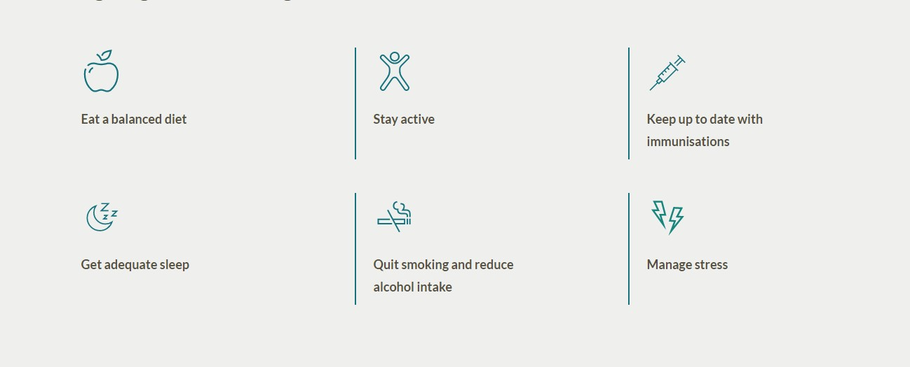
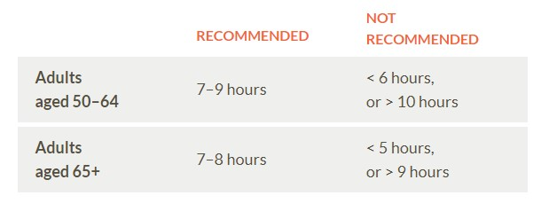

Diet and Nutrition
Eating for healthy immunity:
Take steps to avoid obesity. Obesity is associated with many health risks, including chronic inflammation, compromised immune function and increased risk of serious infection.
Ensure you are eating enough food. Undernutrition also compromises immune function by reducing the body's ability to fight off harmful pathogens.
Certain micronutrients, vitamins and antioxidants, are important to support a healthy immune system. Some foods that are rich in micronutrients include leafy greens, brightly coloured fruit and vegetables, and nuts and seeds.

In addition to improving your overall health, regular moderate-to-vigorous exercise can enhance immune defence activity, reduce chronic inflammation and help slow age-related decline in immune system function.
Daily exercise recommendations:
- Adults aged 50–64: aim for 2.5–5 hours of moderate intensity exercise, or 1.25–2.5 hours of intense exercise per week.
- Adults aged 65+: try to get in 30 minutes of moderate intensity exercise most days.
In addition to practicing good hygiene habits (e.g., regular hand washing, sneezing into a tissue), immunisation is another option that may help to protect against infectious diseases and also boost the immune system.
For more information, please speak to your healthcare professional. In the event of infection, early diagnosis and treatment by your doctor can sometimes hasten recovery and reduce the risk of complications.
A good night’s sleep has a positive effect on immune health and long-lasting immune cell memory, reduces risk of infection, and improves infection outcome. On the other hand, long periods of sleep loss can lead to chronic inflammation and compromised immune function.
How much sleep do you need?

In addition to a myriad of other health risks, smoking and excessive alcohol consumption can trigger chronic inflammation, suppress immune function and increase risk of infection.
Did you know?
The immune system starts to recover within 3 months of quitting smoking.
In healthy adults, it is recommended to limit alcohol consumption to fewer than 10 standard drinks a week, and no more than 4 on any one day. Older adults with existing health issues should follow advice from their healthcare professionals. In general, the less you drink, the lower the risk of alcohol-related harm to the body.
Where short-term stress (minutes) helps prepare the body to fight infection, long-term stress (days to years) can accelerate ageing and immune dysfunction. The negative effects on ageing and the immune system largely result from chronic inflammation that leads to cell damage and reduced sensitivity to early signs of infection.
Although triggers are highly individual, there are several things you can do to help alleviate stress:
- Stay connected with friends and family
- Spend more time outdoors and exercising
- Find a new hobby or creative outlet
- Meditate
- Eat well
- Get enough sleep